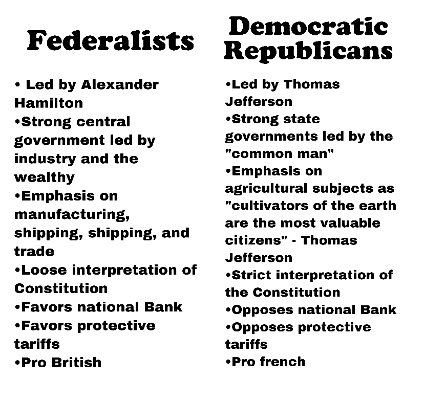

<!DOCTYPE html>
<html></html>
    <head>
        <meta charset="utf-8">
        <meta name="viewport" content="width=device-width, initial-scale=1">
        <title>Aland likes extra credit</title>
    </head>
    <body style="background-color:#73c2fb">
        <h1>The Formation of Federalist and Democratic-Republican Parties!</h1>

        <h2>What it is</h2>
        I worked very hard can i get extra credit pls <b>Enjoy!</b>
        <br>
        <h3>
            At the time of America's creation, two parties formed that had clashing ideas on how the nation should be ran. Two <br>
            of these parties were the Federalists and the Anti-Federalists (Democratic-Republicans) <br>
            
        </h3>

        <p>
            <br>
            <h2>
                The Election of 1800
            </h2>
            <br>
            <h3>After Thomas Jefferson won the election of 1800, the defeat of the Federalists had concluded their attempt to lead America on <br>
                a more conservative/centralized government and less democratic course. Never again have the Federalists since then played a national <br>
                political role after the defeat in 1800. This can show that most American voters at the time had shared the same beliefs aligning with Jefferson's view. <br>
                The Election of 1800 was the first election of the United States that involved two political paries contesting for power, as well as <br>
                it being the first time power was peacefully transitioned from political party to another
            </h3>
        </p> <br>

        <p>
            <h2>Still here? Alright looks like we have a history major here</h2>
            <br>
            <br>
            Click the button below to read more! (anyways i love extra credit just sayingggg) <br>
            <a href="more.html"></a><br />I like extra credit</a><br />
        </p>
        </div>
    </body>
</html>


